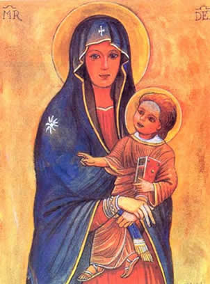

Storia della Madonna Odigitria
Dell’immagine intanto erano cominciate a circolare copie in tutto l’Oriente, poi ortodosso (Madonna del cammino, della strada o guida) e l’Occidente.
Nel 1453 i Giannizzeri ottomani ne distrussero l’originale facendola a pezzi.
In Italia si venera come Madonna di S. Luca nell’omonimo Santuario di Bologna, Madonna d’Itria a Palermo, Mesopanditissa alla Chiesa della Salute di Venezia, Madonna Greca a Roma (S. Dodici Apostoli), Madonna della Salute in Santa Maria Maggiore ecc….
L’iconografia caratteristica è data da una Madonna con tunica che copre il capo (i capelli) e il corpo (Maphorion) e tiene sulle ginocchia il Cristo, benedicente alla Greca.
Nel quadro sono impresse le sigle MP THY = Meter Theou (madre di Dio) o MR DEI.
Un bersagliere, Antonio Nardi, combattente di Crimea portò in Australia, dove era emigrato successivamente, una immagine della Madonna Odigitria che l’aveva salvato da una ferita.
L’immagine è stata tramandata dai nipoti fino ai giorni nostri, quando il pittore Vittorio Caroli ne fece copia per donarla al Papa Giovanni Paolo II.
Questa immagine, battezzata Madonna del Bersagliere, venne rielaborata e divenne Patrona del Corpo (vedi foto), ufficializzata con decreto dell’Ordinariato Militare.
Viene festeggiata l’8 settembre.